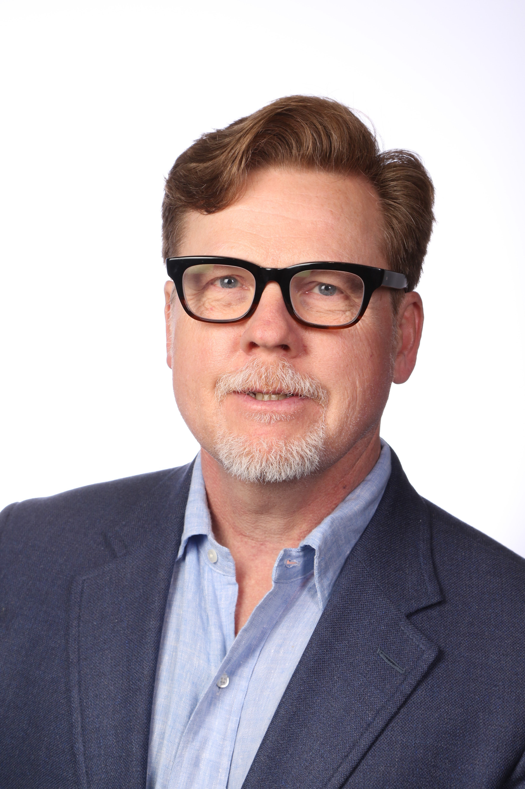

Medical Oncology · Portland, Oregon
Professor of Medicine
OHSU Knight Cancer Institute
Executive Officer, SWOG Cancer Research Network (2013–2026)
Subspecialty oncologist with over 25 years of clinical and investigational experience in sarcoma and genitourinary cancers. Available for consultation in medical-legal matters involving oncology, including cancer diagnosis, treatment, causation analysis, and prognosis.
Professional Inquiry
Academic Profile
Clinical Focus
Three decades of clinical practice and investigational work concentrated in two disease areas.
Soft tissue and bone sarcomas including osteosarcoma, Ewing sarcoma, GIST, liposarcoma, leiomyosarcoma, chondrosarcoma, angiosarcoma, TGCT, and rhabdomyosarcoma. Extensive experience with multimodality treatment — chemotherapy, preoperative chemoradiation, and surgical coordination.
Renal cell carcinoma, prostate cancer, bladder cancer, and testicular malignancies. Depth across all treatment modalities including targeted therapy, immunotherapy, hormonal agents, and cytotoxic chemotherapy in the metastatic and localized settings.
As Executive Officer of SWOG and former CALGB executive, extensive familiarity with cooperative group research, regulatory standards, protocol development, informed consent requirements, and investigational drug development across phase I–III settings.
Research & Publications
Active investigator and author across sarcoma, genitourinary oncology, and oncology clinical trial methodology.
Editorial board member, Critical Reviews in Oncology/Hematology and Urology. Ad hoc reviewer for Journal of Clinical Oncology, The Lancet Oncology, New England Journal of Medicine, and Clinical Cancer Research, among others.
Selected Publications
UpToDate — Contributing Author
UpToDate is a peer-reviewed clinical decision-support resource used by physicians worldwide and frequently referenced in medical-legal proceedings as a benchmark for standard of care. Authorship reflects recognized subspecialty authority.
Curriculum Vitae
Full CV available for download below or upon request. Download CV (PDF) ↓
What Attorneys Come to Dr. Ryan For
Medico-Legal Experience
Extensive experience providing medical-legal consultation in oncology matters on behalf of both plaintiff and defense clients, with particular depth in product liability defense.
Dr. Ryan has served as a medical expert in a range of medico-legal matters on behalf of both plaintiff and defense clients. His product liability work has included defense of major corporate defendants in multi-district litigation involving allegations of cancer causation. He is experienced in deposition and trial testimony, and is available to travel nationwide. Opinions are based on peer-reviewed medical literature, published clinical guidelines, and more than two decades of clinical oncology practice.
Professional Inquiries
This site is intended for attorneys, insurers, and healthcare organizations seeking professional consultation. For clinical care inquiries, please contact OHSU Knight Cancer Institute directly.
Both plaintiff and defense matters considered. Conflicts screened prior to engagement.
Retainer and fee schedule provided upon initial inquiry.
For clinical care, please contact OHSU Knight Cancer Institute directly.